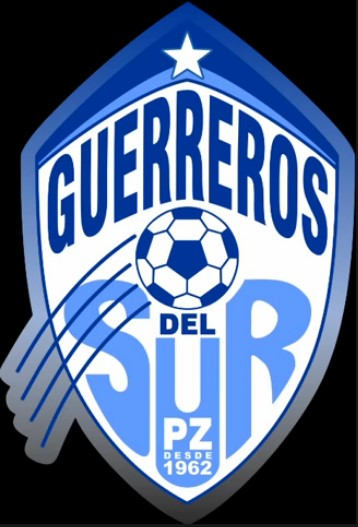

Los guerreros del sur  Fig 7. El escudo del Municipal Pérez Zeledón Canción del Club El navegador no soporta este tipo de audio Canción disponible en: YouTube Úbicación del Estadio Nota: Se aconseja llevar sombrilla al estadio, ya que en Pérez Zeledón llueve mucho